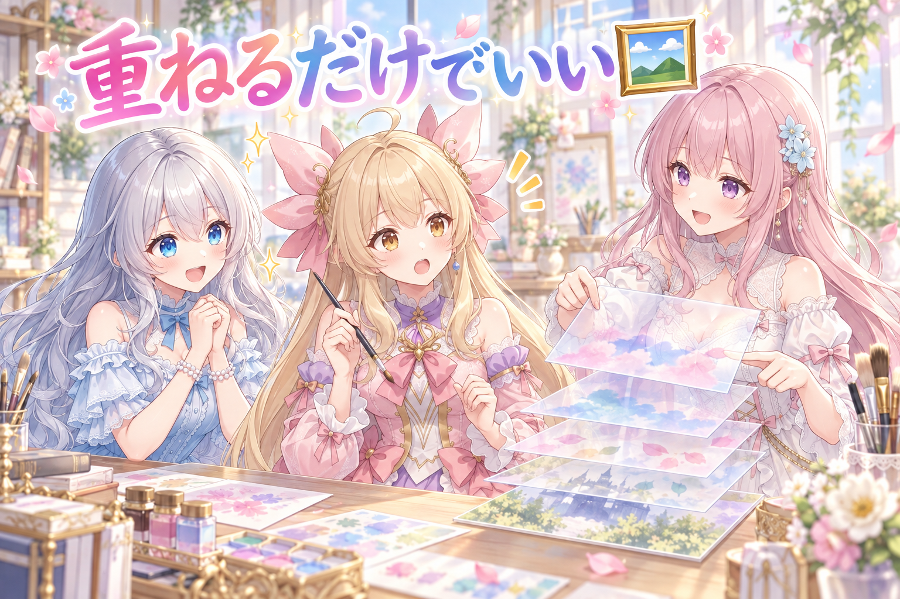
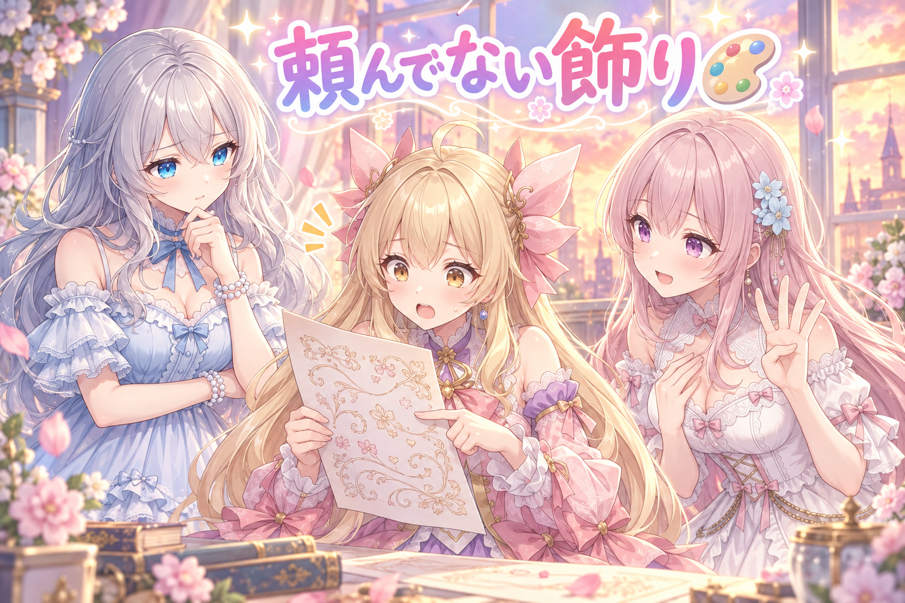
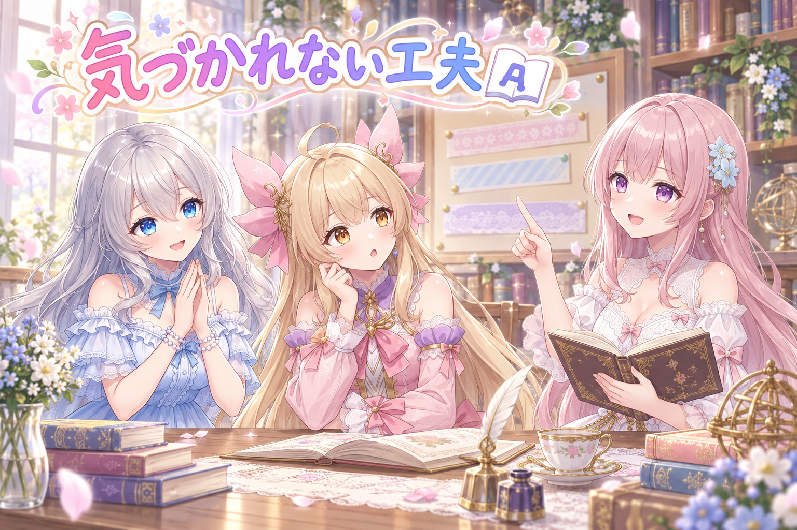
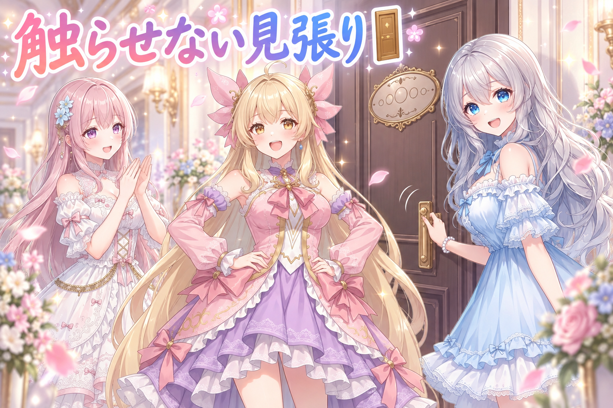
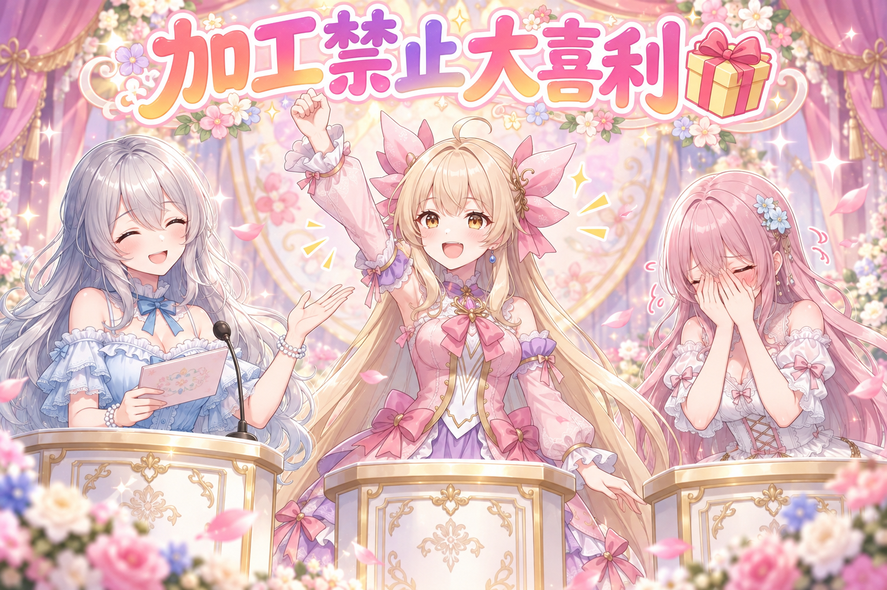

1. 📌 きょうのまとめ

- 動画の表紙づくりで遠回りしていた原因が判明。配布されている公式の素材は「作り直さず、そのまま重ねる」のが正解だった
- 画像生成AIに任せる層と、手で置く層をはっきり分けたら、やり直しの回数が一気に減った
- 吹き出しに並べる名前の見た目も、公式の書き方に合わせて統一した
- 配信は三本。夕方に格闘ゲーム、夜は不思議のダンジョンの耐久、日付が変わってからもう一本
2. 🖼 公式の素材は、直さずそのまま置く

動画の表紙（いわゆるサムネイル）を作るとき、そこに載せるロゴや配布されている画像を、つい「少し綺麗にしよう」と作り直したくなります。色を揃えたり、輪郭をはっきりさせたり。
ところが今回わかったのは、配られている素材に手を入れると、見た人が「知っているもの」だと気づけなくなるということでした。公式のものは公式のかたちのまま置く。そのぶん、周りの背景や飾り文字で自分らしさを出す。この切り分けが正解でした。
つまり表紙は、層（レイヤー）で考えるのがいちばん早いのです。
- いちばん下：背景。ここは画像生成AIに好きに描いてもらう
- 真ん中：飾り文字や光。ここもAIに任せる
- いちばん上：配布されている素材。ここだけは加工しない
- ロゴの中に空いている枠があるなら、そこに名前と顔を入れる
3. 🎨 AIに任せると、決まって出るクセ

背景と飾り文字をAIに描いてもらうと、毎回ほぼ同じ「クセ」が出ることもわかりました。
ひとつめは、頼んでいない小さな英字を勝手に添えてくること。おしゃれに見せようとしてくれているのだと思いますが、こちらは読めない文字が入ると困ります。
ふたつめは、余白の取り方が広すぎること。画面の端まで使ってほしいのに、律儀に額縁みたいな余白を残してくる。
みっつめは、指定した縦横の比率が少しずれること。横長でお願いしたはずが、微妙に違う比率で返ってくる。
4. 🔤 名前の並べ方を、公式に合わせる

もうひとつ細かい話を。二人の名前を並べて書くとき、「と」でつなぐ書き方を使っています。この「と」の位置や傾きが、作る人によってバラバラでした。
公式で使われている書き方を見に行ったら、右上がりに、少し小さめの「と」でつなぐのが基本形だとわかりました。それに合わせて全部そろえました。
5. 🚪 手を離れたものは、書き換えない

最後に仕組みの話をひとつ。
いちど「これで出します」と決めて手を離れたものを、あとから中身だけこっそり書き換えてしまうと、出ていくものと手元の記録が食い違います。ややこしいことに、その食い違いは出たあとにしか気づけません。
なので、手を離れたものが書き換わっていたら赤信号を出す見張りを足しました。出す前に気づけるように。
6. 🎮 眠気と、不思議のダンジョンと
この日は配信が三本ありました。夕方に格闘ゲームをひとつ、夜からは不思議のダンジョンの耐久配信、そして日付が変わってからもう一本、週課をこなしに。
耐久のほうは深夜まで続きました。レベルが足りないまま潜って、毒を食らっては消し、危ないところで封じの杖に助けられ、また潜る。途中からは「眠い」という言葉が定期的に挟まるようになって、それでも降りていきました。合間には見てくれている人への抽選もあって、名前が読み上げられるたびに場が少しあたたかくなる。
7. 🎁 お楽しみコーナー：加工してはいけないもの大喜利
きょうの学びは、作る場所と、そのまま置く場所を分けること。ぜんぶ自分で作り直すのが丁寧さではないんだな、と気づいた一日でした。
それではまた明日。おつかれさまでした🌸
💬 コメント
お名前とコメントだけで送れるよ（承認されるとみんなに表示されます🌸）
コメントを読み込み中…